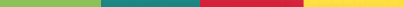
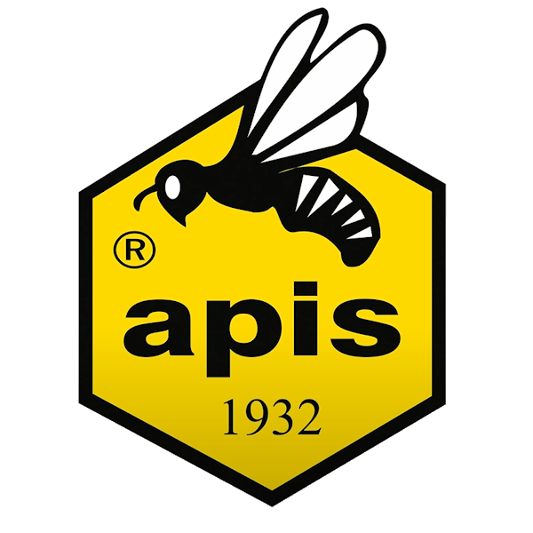

Wydarzenia
 Mural Apis Lublin 12.06.2025
Mural powstał na zlecenie firmy Apis w Lublinie. Projekt nawiązuje do tradycji pszczelarskich regionu oraz historii firmy. Mural zdobi ścianę budynku przy ul. Diamentowej i jest efektem współpracy lokalnych artystów.